The standard pictures as this revision sews them, at 0c1ed6d3bd. Every number is measured by the functions the conformance cases use.
| Picture | Stitches | Thread changes | Jumps | Jump threads left to cut | Stitches astray | Slivers | Bare, % of the design | Thickest spot, fills | At 3 fills or more, mm² | Most needle points per mm² | Detail lost, % of each colour's parts |
|---|---|---|---|---|---|---|---|---|---|---|---|
| dog-on-turf-6 | 9,758 | 5 | 55 | 49 | 2 | 1 | 0.068 | 3.985 | 75.750 | 27 | 14.394 |
| dog-on-turf-9 | 9,908 | 8 | 68 | 59 | 2 | 0 | 0.044 | 3.952 | 51.750 | 24 | 17.137 |
| dog-running-6 | 10,406 | 5 | 47 | 41 | 3 | 0 | 0.031 | 3.910 | 55.250 | 26 | 10.185 |
| dog-running-9 | 11,645 | 8 | 65 | 56 | 1 | 0 | 0.056 | 3.973 | 96.250 | 25 | 7.895 |
| pear | 4,681 | 2 | 5 | 2 | 0 | 0 | 0 | 3.952 | 4 | 18 | 0 |
| lettered-patch | 3,925 | 2 | 11 | 8 | 0 | 0 | 0.002 | 3.954 | 47.500 | 12 | 0 |
| ts-13a-digitized | 11,402 | 2 | 21 | 18 | 0 | 1 | 0.003 | 3.991 | 34 | 14 | 0 |
| ts-13b-digitized | 6,790 | 3 | 51 | 47 | 19 | 0 | 0.066 | 3.397 | 0 | 13 | 0 |
| ts-13c-digitized | 5,704 | 4 | 14 | 9 | 6 | 0 | 0.016 | 3.928 | 49 | 14 | 0 |
| ts-13d-digitized | 8,093 | 3 | 16 | 12 | 0 | 0 | 0 | 3.793 | 14.500 | 10 | 0 |
| ts-13e-digitized | 2,606 | 2 | 8 | 5 | 0 | 0 | 0.001 | 3.243 | 0 | 10 | 0 |
A number in red got worse and one in green got better. More stitches are neither.
The editor in Chromium and stitch wrote the same PES and DST files, byte for byte, of alpine-night.
The editor did not export dog-on-turf-6, so nothing was compared: plug-in exceeded its instruction budget.
The panel's exports, StitchCraft's engine in the page, wrote the PES and DST files and drew the picture stitch makes, byte for byte, of alpine-night, dog-on-turf-6, dog-on-turf-9, dog-running-6, dog-running-9: PES 0.3 s to 1.7 s, DST 0.3 s to 1.8 s, the picture 0.4 s to 1.9 s.
Giving dog-on-turf-6 the Auto effect took 2.8 s (limit 30.0 s) until the editor had drawn them, and its PES export was refused: the middle of 3 runs in Chromium drawing in software.
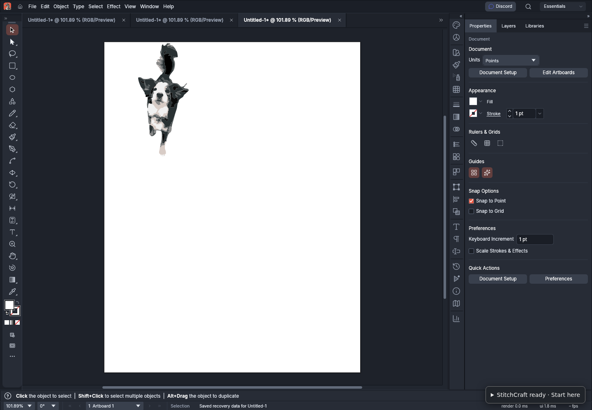
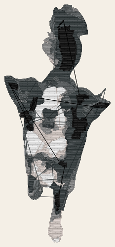
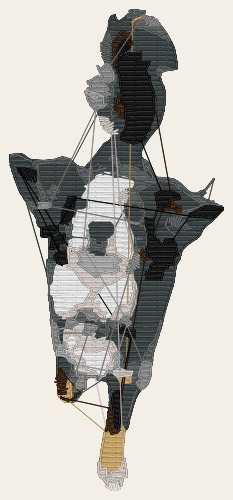
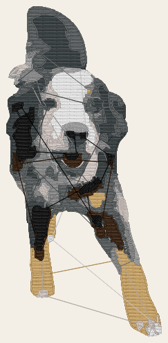
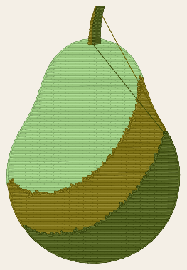
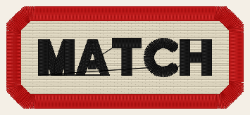
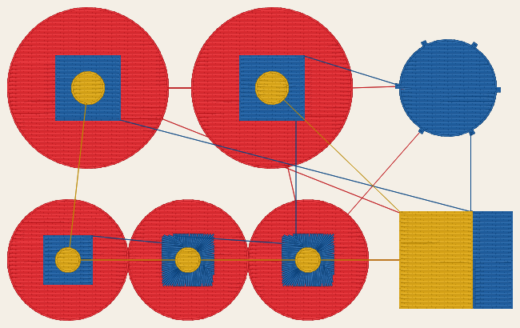
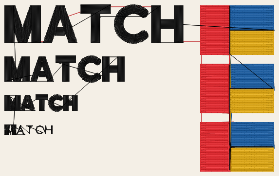
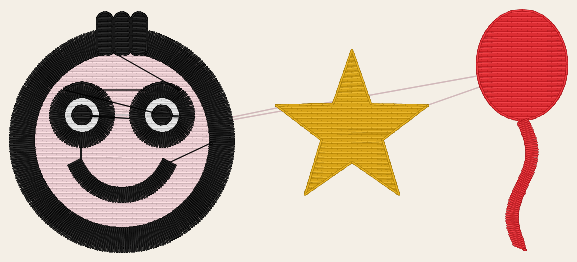
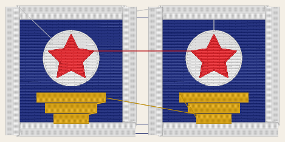
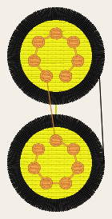
This run built the tools in 165 s and planned and measured the pictures in 31 s.